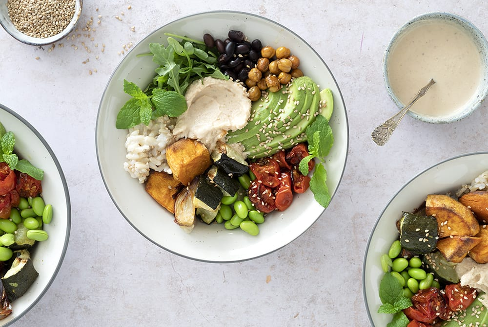

Buddha Bowl

Description
Buddha Bowl is a lovely vegetarian dish with a lot of room for
variation. It is perfect for cleaning out the vegetable drawer
in your fridge.
Different ingredients of the salad can be swapped out for other
options. Mushrooms, carrots, bean sprouts and aubergine are all
candidates that work well in this dish.
The ingredients used in this recipe make for a very tasty dish,
but don't get too hung up on them. Buddha Bowls come in many
variations!
Ingredients
The salad itself
- 2 dl brown rice
- 300 g sweet potatoes/yams, diced
- 1 zucchini, diced
- 15 cherry tomatoes, cut into halves
- 1 red onion, cut into thin slices
- 50 g edamame beans
- 1 tin of black beans, washed and drained
- 1 avocado, cut into slices
- 125 g rucola salad leaves
- 2 tsp. sesame seeds, roasted
- 1 handfull fresh mint leaves, coriander or parsley
- 2 dl hummus
- 3 tbsp. olive oil
- 1 tsp. flaky salt
Tahin dressing
- 1 tbsp. tahin
- 1 garlic clove, pressed
- ½ lemon's juice
- 3 tbsp. water
- ½ tsp. ground cumin
- Salt
- Black pepper, freshly ground
Roast chickpeas
- 1 tin chickpeas, roasted
- ½ tsp. smoked paprika
- 1 tbsp. olive oil
- 1 tsp. salt
Steps
The salad itself
- Cook the rice according to the instructions on the packaging.
- While the rice cook, prepare the chickpeas, tahin and vegetables.
- Mix sweet potatoes, zucchini, tomatoes and onion with oil and salt and set the mix on an oven tray with baking paper.
- Bake them in a preheated oven at 175 degrees for 20-25 minutes.
- Pour boiling water over edamame beans, let them sit for a moment and then remove water.
- Arrange the salad in bowls with baked vegetables, edamame beans, black beans, rice, avocado and rucola.
- Place a spoonful of hummus in the middle of each bowl and top off with sesame seeds and chopped mint leaves. Serve tahin on the side.
Tahin dressing
- Put tahin, garlic, lemon juice, cumin, salt and pepper in a bowl.
- Stir whilst gradually adding water until the dressing has a uniform consistency.
Roast chickpeas
- Mix the chickpeas with olive oil, paprika and salt.
- Place the mix on an oven tray with baking paper and bake in a preheated oven at 175 degrees for 20-25 minutes.
- Turn the mix around occasionally while it's baking.